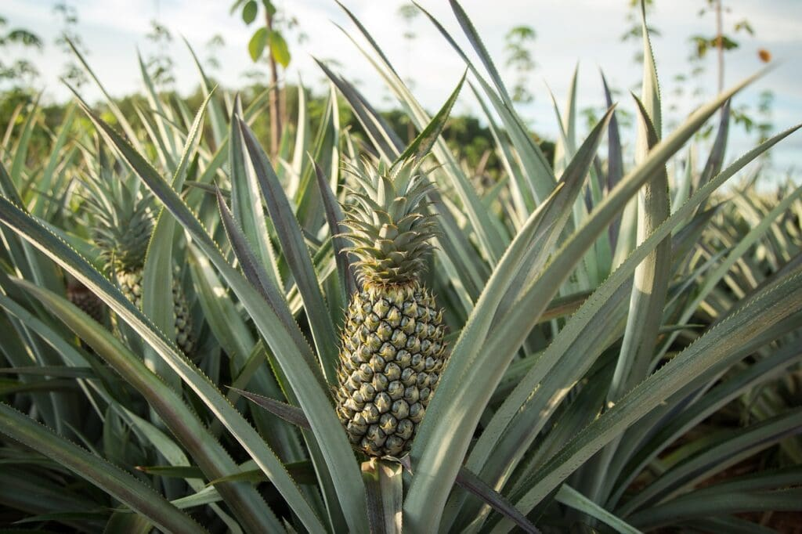

What do we have?
1. Abacaxi Pineapple
Types of abacaxi pineapples include the sugarloaf, Montufar, White Kauai, and Antigua Black.
They're tall and spiny with blue-green foliage.

2. Queen Pineapple
There are a number of varieties of queen pineapples among the
dozens of variations, with three popular varieties being the Natal Queen, the MacGregor.

3. Mordilona Pineapple
Mordilona pineapples are large, irregular, and cylindrical with a yellow to orange peel.
Meat inside, it tastes sweet and pleasant with a juicy texture.
